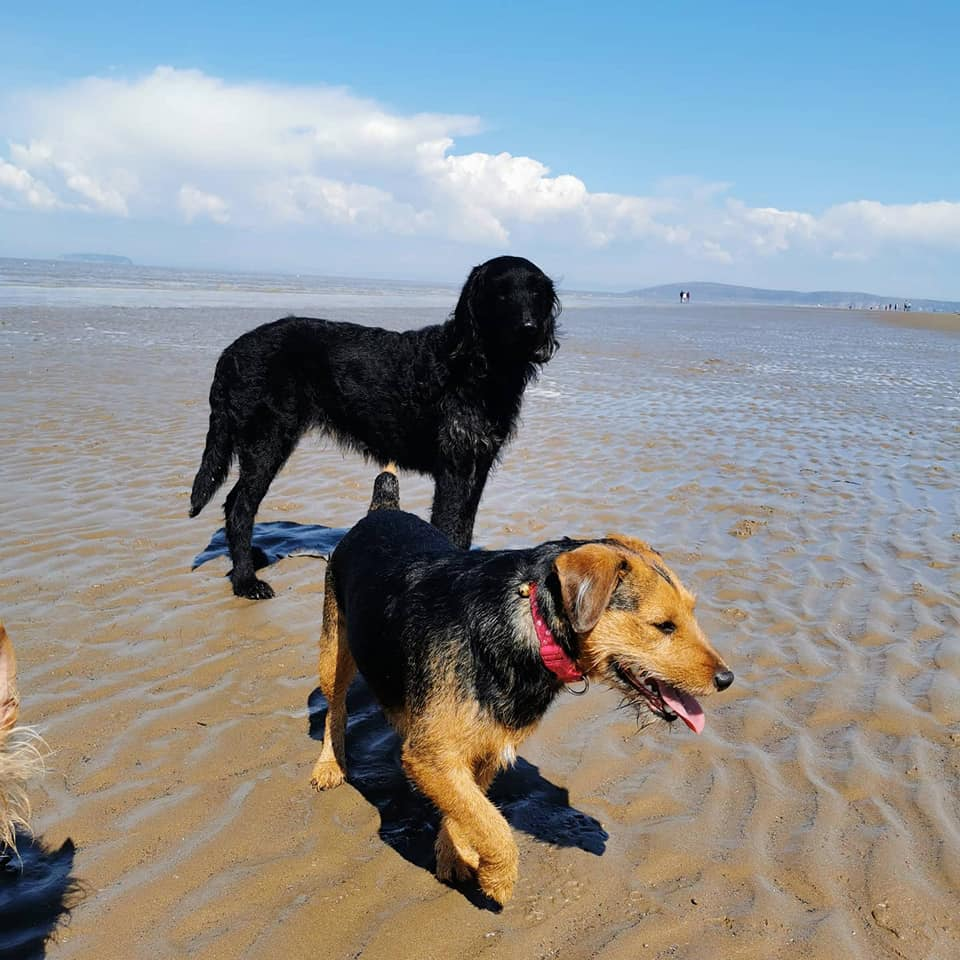
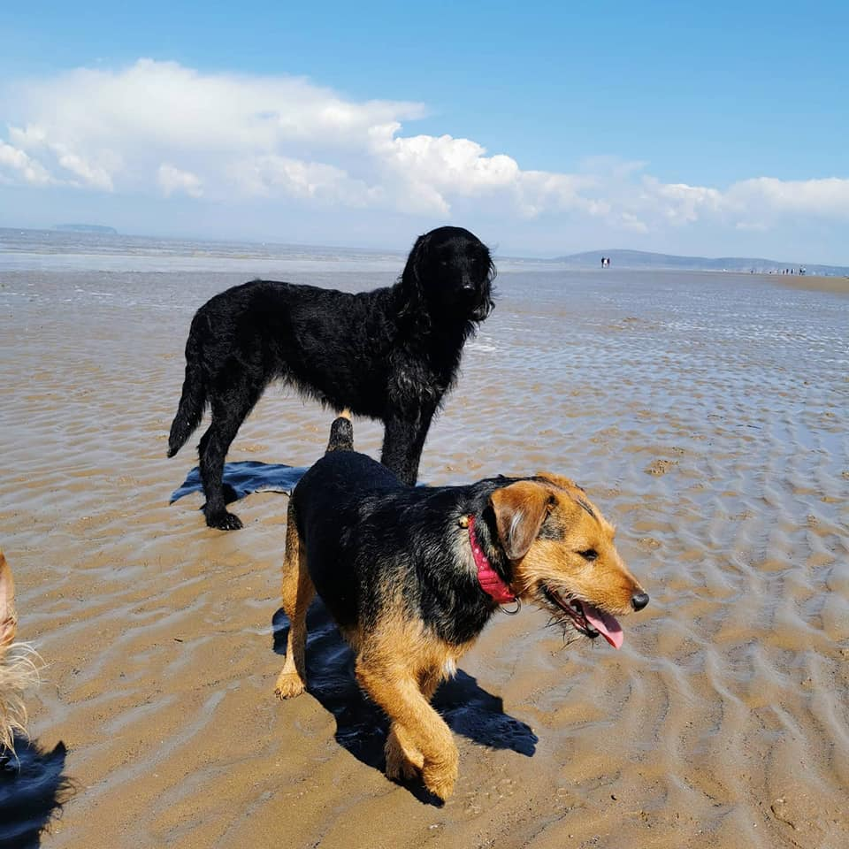

About Talitha: Your Trusted Paws-On Partner For Dog Walking
Who Am I?
I'm Talitha, a dedicated dog enthusiast with a heart full of love for our four-legged friends. I've spent countless hours playing, bonding, and caring for dogs of all shapes and sizes. I understand the importance of exercise, socialization, and routine for a happy and healthy pup.
Why Choose Me
- Passion: My love for dogs goes beyond a job; it's a way of life. Your pet's well-being is my top priority.
- Reliability: You can count on me to be there rain or shine, ensuring your dog gets the exercise and companionship they need.
- Experience: With years of experience, I know how to handle different personalities and temperaments with care and patience.
- Safety: Your dog's safety is paramount. I'm trained in handling emergencies and ensuring safe walks.
- Personalized Care: Each dog is unique, and I tailor my services to suit their individual needs and preferences.
- Flexibility: Whether you need daily walks or occasional outings, I can accommodate your schedule.
Some Of my Happy Customers


 



Let's Take The Lead
Your dog's tail-wagging happiness is just a leash away. Whether your pup needs a daily stroll, a romp in the park, or some extra TLC, I'm here to be your trusted companion for all your dog walking needs. Let's embark on a journey of tail-wagging adventures together! Contact me today to schedule a meet-and-greet and take the first step toward a happier, healthier dog.